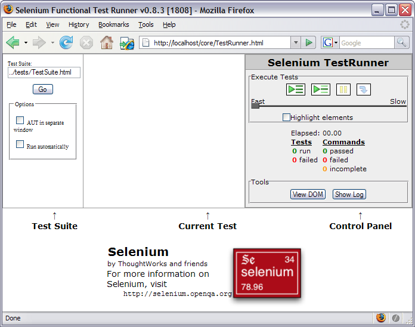
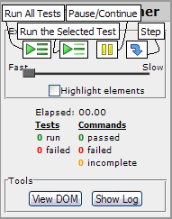

Overview
This document details how Selenium Core can be deployed to test or script web applications.Getting Started
If this is your first time using a Selenium tool, you may not want to just use Selenium Core directly; one good way to get introduced to Selenium's features is to use Selenium IDE, which embeds Selenium Core internally. Download Selenium IDE and you'll get Selenium Core along with it. Give it a spin!
When you're done, you may want to consider more carefully Which Selenium Tool Should I Use?
Installing Selenium Core
To use Selenium Core, you need to make it available from the same web server as the application you want to test. That means that you can't use Selenium Core (pure DHTML/JavaScript) to write a test of google.com This is because Selenium Core is pure DHTML/JavaScript, and so it is bound by JavaScript's security restrictions. Specifically, JavaScript enforces (This is a JavaScript security requirement. If you can't/won't modify the webserver you want to test, Selenium Core may not be the right tool for you; you may just want to use Selenium IDE or Selenium RC instead. If you're on Windows and you only want to use Selenium Core with Internet Explorer, you may also use HTA mode to run your tests against a remote web site.)
Normally, this is as simple as extracting the Selenium Core zip file into the DocumentRoot, htdocs, or webroot of your webserver. Then, try to open the TestRunner.html page on your website, which should be in the core/ directory.
Why do I have to install Selenium Core on the same web server?
Selenium Core is pure DHTML/JavaScript; it is therefore bound by JavaScript security policies, especially the same origin policy. (That write-up is from the Mozilla website, but all modern JavaScript browsers enforce this policy.) The same origin policy states that JavaScript is only allowed to read/modify HTML from the same origin as its source.
That policy makes a lot of sense. Let's say you've got your browser window pointing at, for example, your bank's website, but you also have another webpage open pointing to someone's blog. JavaScript is allowed to read values from web pages, as well as change data appearing on webpages you've loaded. If not for the same origin policy, a malicious blogger could read your bank data, or worse, rewrite your bank page to make you think it was saying something else. The blogger could use JavaScript to trick you into giving him sensitive information.
Despite the soundness of the policy, it creates a problem for JavaScript automated tests. If you write a .js file designed to test google.com, the same origin policy denies you the right to run that .js file with google.com; instead, you'd have to somehow install that .js file on google.com in order to write automated tests against it. (Selenium IDE defeats the policy by running as a trusted Firefox extension; Selenium RC works around it by acting as a proxy server for the browser, tricking it into believing that our JS is installed on other people's web servers.)
Running Selenium's Test Suite
TestRunner.html should look something like this:

The screen is divided into four sections: "Test Suite", "Current Test", "Control Panel" and the main application frame where your application will reside. Initially, none of the Control Panel buttons will work, because you haven't selected a test suite. By default, Selenium Core offers to run the test suite in "../tests/TestSuite.html". Click "Go" to open that test suite.
If you installed the /tests along with /core, you should now see a list of tests to run. Press the "Run All Tests" button  to run all of our automated tests.
Note that some tests may fail if your browser blocks pop-ups, manages passwords, or does other helpful things that interfere with automation. Be sure to turn these features off before running the tests!
to run all of our automated tests.
Note that some tests may fail if your browser blocks pop-ups, manages passwords, or does other helpful things that interfere with automation. Be sure to turn these features off before running the tests!
Control Panel
Here's a close-up view of the Selenium Control Panel:

The four execution buttons on the top are:
 Run All Tests: Run every test in the test suite.
Run All Tests: Run every test in the test suite. Run Selected Test: Click on one test in the test suite, then click here to run just that one test.
Run Selected Test: Click on one test in the test suite, then click here to run just that one test. Pause /
Pause /  Continue: While a test is running, press the Pause button to temporarily stop running commands. After you press Pause, you can press Continue to resume the test.
Continue: While a test is running, press the Pause button to temporarily stop running commands. After you press Pause, you can press Continue to resume the test. Step: Click on a test in the test suite, then click on just one line of the test to set a "breakpoint." When the TestRunner reaches a breakpoint, it will automatically pause execution on that line. You may then press the Step button to run the next line of the test and pause again. You can also click on a breakpoint line to remove the breakpoint.
Step: Click on a test in the test suite, then click on just one line of the test to set a "breakpoint." When the TestRunner reaches a breakpoint, it will automatically pause execution on that line. You may then press the Step button to run the next line of the test and pause again. You can also click on a breakpoint line to remove the breakpoint.
Beneath the four execution buttons is the Speed Slider. You can drag the slider shuttle to the right to introduce artificial delays in your test, running your test more slowly than it would in a normal automated run. By default, Selenium will run your tests without any delay.
You may also check the "Highlight Elements" button to highlight elements as they are used in a Selenium test; each element will flash yellow as it is used. (Also be sure to check out the "highlight" command, which highlights just one element directly.)
The Control Panel lists out a summary of how long the tests have taken in aggregate, and a list of how many tests have passed/failed. Commands which were unable to execute due to errors are marked as "incomplete"; tests containing any failed or incomplete commands are considered failures.
"View DOM" provides a structured view of the DOM of your document as it's currently represented in the page, including any dynamically generated elements. It's fairly crude; you may prefer to use the Firefox DOM Explorer or IE Developer Toolbar for more sophisticated DOM analysis.
"Show Log" makes the log window appear; logging only occurs while the log window is open. Close the log window to stop logging.
Writing Your First Test Case
A test-case is represented by an HTML document written in "Selenese", containing a table with 3 columns, room enough for a command and two arguments. (See the Reference Guide for a complete list of commands.) Not all commands take two arguments; in this case either leave the column blank or use a to make the table look better.
Any rows with fewer than 3 columns will be ignored by Selenium, so can be used for comments.
Example:
MyTest open /mypage type nameField John Smith click submitButton True verifyText name John Smith
Adding your Test to the Test Suite
Make your new test case available by linking to it from the TestSuite; for example:
<table id="suiteTable" cellpadding="1" cellspacing="1" border="1">
<tbody>
<tr><td><b>Test Suite </b> </td> </tr>
<tr><td><a href="MyTest.html">MyTest</a></td></tr>
...etc...
</tbody>
</table>
For an example of a test suite, see
${SELENIUM_HOME}/tests/TestSuite.html. That example is big and complicated; for a simpler example, take a look at ${SELENIUM_HOME}/tests/ShortTestSuite.html
Finally, run your test suite by opening TestRunner.html, browsing to your test suite, and clicking "Go".
Run your Test Case in Multi-window Mode
By default your application under test (AUT) is run in a frame which resides in the same window with Selenium Control Panel. You can also run your application under test in a seperate window just by checking the "AUT in separate window" checkbox. You may need to use multi-window mode if your application will attempt to occupy the top window of the browser ("frame-busting") and break Selenium.
Note: Because Firefox currently does not support the document.readyState property, Selenium's multi-window mode may not be very stable on Firefox. You can install this extension to solve this problem. This extension will be automatically installed in a custom Firefox profile if you run Selenium Remote Control.
SetUp / TearDown
There are no setUp and tearDown commands in Selenese, but there is a way to handle these common testing operations. On the site being tested, create URLs for setUp and tearDown. Then, when the test runner opens these URLs, the server can do whatever setUp or tearDown is necessary.
Example:
For the T&E project, we wanted the functional tests to run as a dummy user. Therefore, we made a /setUpFT URL that would create a dummy user and write the userID to the page. Then, we can store this value (using the command storeValue) and use it in the script. Finally, we made a /tearDownFT URL which takes the dummy userID as a parameter and deletes the user. Therefore, our tests look like this:
Setup and Teardown open /setUpFT storeValue userid open /login type userID ${userid} click submit open /tearDownFT?userid=${userid}
Continuous Integration
Selenium Core can be integrated with an automated build. When the parameter "auto=true" is added to the URL, Selenium will run the entire suite of tests, and then POST the results to an URL of your choosing. The default URL is "/postResults", but an alternative handler location can be provided by specifying a "resultsUrl" parameter.
That means that you're going to need some kind of web application to handle the POSTed test results and save them to disk. You can write your own in a web-enabled language of your choosing (a simple servlet, ASP, JSP, Perl script, or whatever) or you can use the one that comes with Selenium Remote Control. (Since Selenium Core is pure DHTML/JavaScript, it's not allowed to save results to disk directly.)
- If you do decide to write your own, the steps for Continuous Integration are:
Create a servlet-type application at the url /postResults which can read the parameters below and write them to a file.
- Create a script which can start up a brower and send to to the URL: selenium?auto=true
- Generally, this can be done by merely calling the browser with the URL as an argument:
firefox.exe http://localhost/selenium?auto=true
- Make your continuous build:
- Call the script from step 2, preferably using more than one browser
- Wait for it to finish, possibly by checking for the existence of the file(s) from step 1
- Parse these files to determine whether the build passed or failed
- Act accordingly (send emails, update a build web page, etc.)
The GET parameters you can pass to TestRunner.html are:
Parameter Type Description Default auto boolean Run the specified test suite automatically and post the results. false test relative URL The URL of the test suite to run, e.g. ../tests/TestSuite.html. No default; you must specify a test suite if auto=true resultsUrl relative URL The URL to which we'll post the test results when we're finished. /postResults close boolean If auto=true, automatically close the browser window when the test is finished. false baseUrl absolute URL If the "open" command uses a relative URL, we'll make it absolute by using this base URL. This URL MUST be an absolute URL , i.e. it should start with "http://" or "https://", and it should point to a directory, i.e. the URL path should end with "/". (If the URL does NOT end in /, we'll automatically chop off the last part of the path, e.g. "http://foo/bar" will be treated as "http://foo/".) The absolute URL of the test suite specified in the "test" parameter. multiWindow boolean Run the tests in multi-window mode, where the AUT runs in a separate window. false highlight boolean Highlight each element as it is located. false runInterval integer (milliseconds) Pause this number of milliseconds between test commands 0 defaultLogLevel string The default logging level (one of "debug", "info", "warn", "error" or "off"). If unspecified, the logging level starts at "info" until you change it with a setBrowserLogLevel command or open the logging window and change the logging level manually. false save boolean (HTA only) If auto=true, instead of POSTing the test results to a web server, just save the test results to a file. In this case we'll treat the "resultsURL" as the file name to save. false
The POST parameters we'll pass to the fields of the post are:
Parameter Description result the word "passed" or "failed" depending on whether the whole suite passed or at least one test failed. totalTime the time in seconds for the whole suite to run numTestPasses the number of tests that passed numTestFailures the number of tests that failed. numCommandPasses the number of commands that passed. numCommandFailures the number of assertions that failed. numCommandErrors the number of commands that had an error. suite the suite table, including the hidden column of test results log the text of all logs captured in the background. Set the logging level with the setBrowserLogLevel command or with the defaultLogLevel parameter. Any messages printed to the log window will not be posted to the server. testTable.1 the first test table testTable.2 the second test table ... ... testTable.N The Nth test table
HTA Mode
Selenium Core provides an additional mechanism for running automated tests called "HTA mode." HTA Mode only works on Windows, and only with Internet Explorer; you can't use HTA mode to test any other browser. An HTA file is a special type of HTML file that is allowed to violate the same origin policy and to write files to disk. When running in HTA mode, you don't have to install Selenium Core on the same webserver as the AUT. HTA files are also allowed to save test results directly to disk, rather than POSTing the test results to a webserver.
To run Selenium Core in HTA mode, just double-click on TestRunner.hta, in the /core directory of your Selenium installation. (As you can see, TestRunner.hta is just a copy of TestRunner.html; but that ".hta" extension makes a big difference!) You can then run your test suite just like any other Selenium Core test, but since the tests are being run in HTA mode, you're free to run your tests against any website.
You can also run TestRunner.hta from the command line, passing arguments to it just like you would pass arguments to an HTML file, like this:
C:\selenium\core>TestRunner.hta "test=..%2Ftests%2FTestSuite.html&auto=true&close=true&resultsUrl=results.html&save=true"